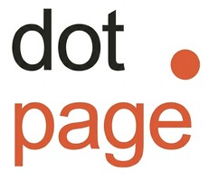

Web Studio
dot.page Web Studio
Modern, responsive websites and landing pages built with React, TypeScript, and clean UI/UX designs focused on business conversions.
React
TypeScript
CSS Modules
B.Sc. Electronic Engineer | L&D Specialist | Full-Stack Developer
Results-driven Technical SaaS professional with 10+ years of experience across technical support, customer enablement, training, knowledge management, and cross-functional collaboration. Skilled in troubleshooting complex technical challenges, improving processes, supporting business operations, and bridging the gap between customers, technology, and product teams in fast-paced SaaS environments.
Founder of dot.page Web Studio , delivering modern websites and landing pages for businesses with a focus on user experience, performance, and practical digital solutions. Full Stack Web Developer graduate from the Technion, with hands-on experience building responsive web applications using HTML, CSS, JavaScript, React, Node.js, and AI-powered tools.
Passionate about emerging technologies, AI-driven innovation, and continuous learning. Combining technical expertise, customer-focused communication, and problem-solving skills to create impactful solutions and drive business growth.

Founder & Full Stack Web Developer | dot.page Web Studio 2025 – NowFounded dot.page Web Studio , modern websites and landing pages for businesses.
JavaScript, HTML, CSS, REST API, Java, Node.js, Angular, React, Python, GraphQL, Git, Postman, Firebase, MongoDB, SQL, and AI for developers.
Routing and Switching
Majored in Communication & RF
Modern, responsive websites and landing pages built with React, TypeScript, and clean UI/UX designs focused on business conversions.
A highly responsive & lightning-fast landing page developed with React and optimized with the Vite build tool for modern browser performance.
An interactive user directory and management interface powered by the JSONPlaceholder REST API, featuring dynamic user data retrieval and seamless UI rendering.
Phone: +972 50-2345005
Email: talbinder1@gmail.com
LinkedIn: linkedin.com/in/tal-binder
GitHub: github.com/Tal264